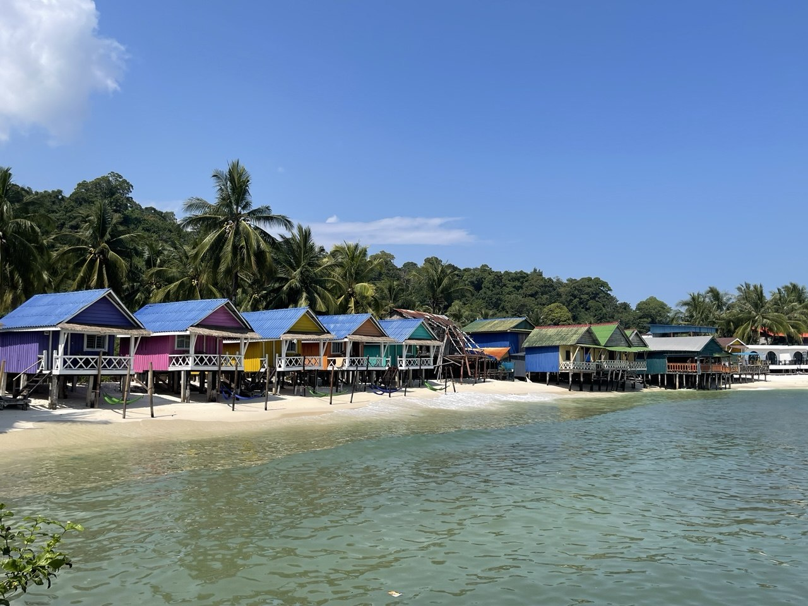
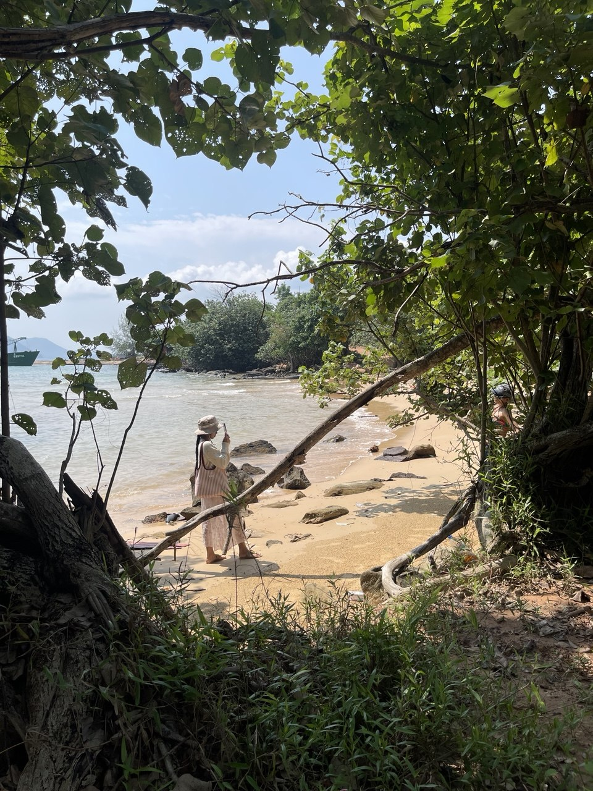
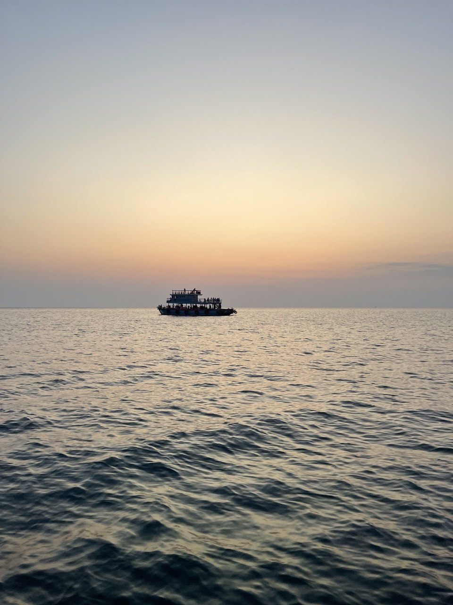
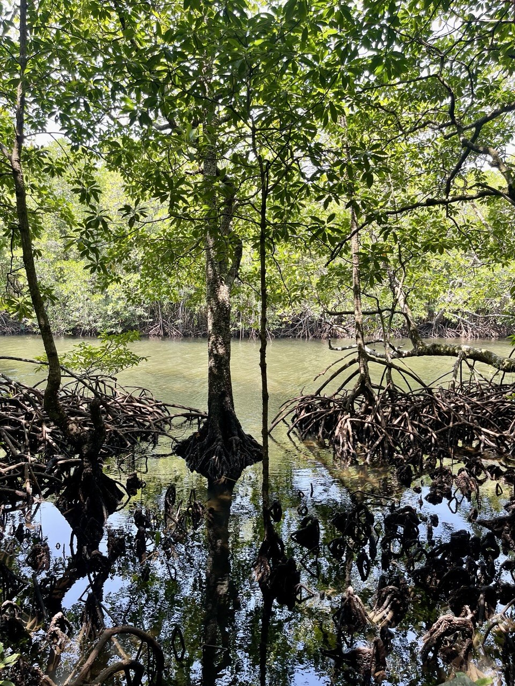
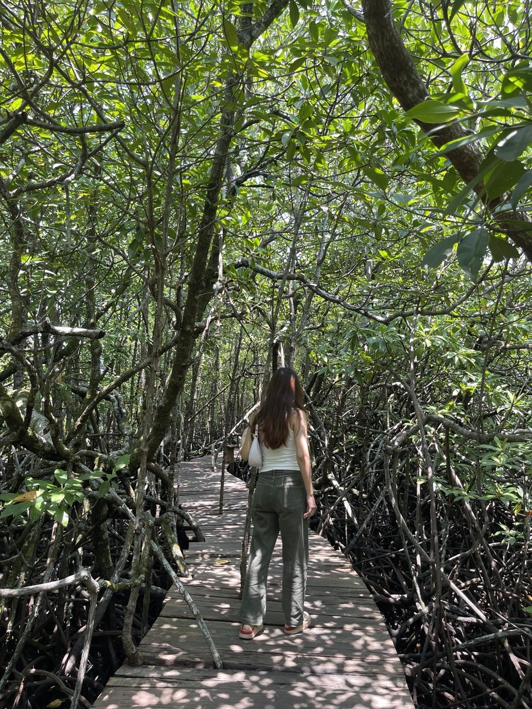
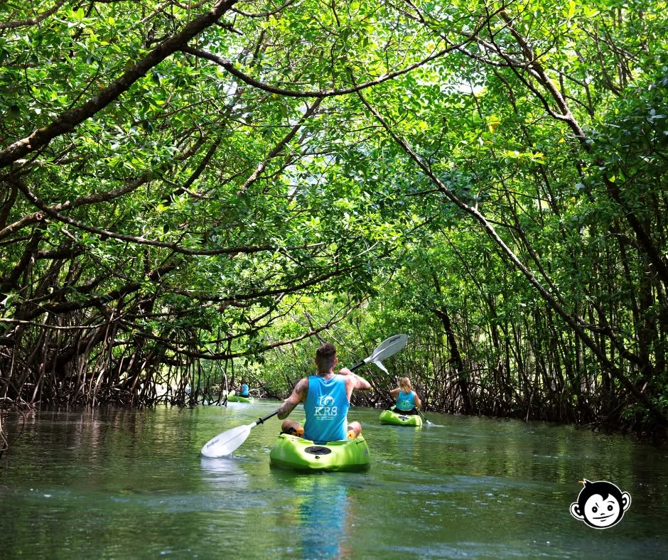
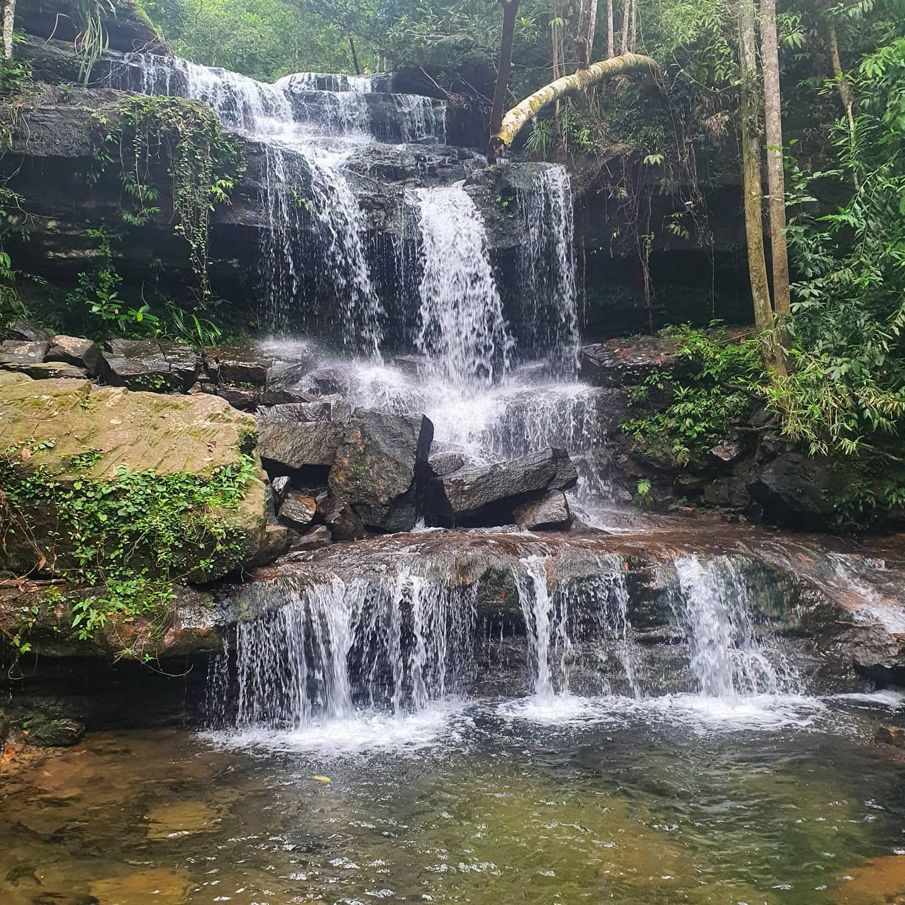
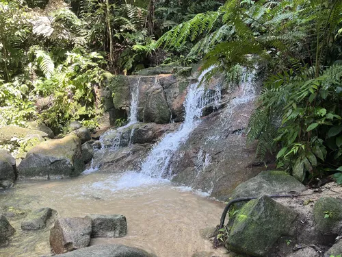

Koh Rong,
Budget Expense Cambodia
A Guide to Visiting Koh Rong on a Budget
Day One — Welcome to Koh Rong! Where the beautiful ocean begins
The island off Sihanoukville that's more fishing village than resort.

Most travelers treat Koh Rong as a two-day beach stop between Koh Rong to another island. Stay longer and it turns into something else: four small villages including Koh Touch, Sok San, Than Sour island, Palm island, where most locals still live from fishing and small scale crop cultivation, a jungle interior with waterfalls and a 316m peak, and beaches that stretch on quietly once the day-trip ferries pull out. This is my journal from two days there, with the honest cost of each one taped in alongside it Visit Koh Rong (2026, March 2).
Day One — Arriving at Koh Rong
Arriving where the road runs out
The bus from Phnom Penh drops you off in the coastal city of Sihanoukville. From there, you take a quick speed ferry across the beautiful blue ocean to Koh Rong island. It'll take approximately 40–50 minutes.
When you get off the boat at Koh Touch, you will see gorgeous white sand beaches and a relaxed island vibe. There are lovely wooden piers stretching into the clear water. By evening you can find many street food gatherings, and the delicious smell of fresh seafood barbecues in front of the hotel.
I found a cozy, budget-friendly local guesthouse right near the water. I ate dinner where the music was playing, enjoyed the island energy, and fell asleep to the peaceful sound of waves.

Day One — arriving at koh rong
This is why you should rent a boat trip
A typical boat trip out of Koh Touch runs from around 1 pm to 8 pm and costs about $15 per person. The boat usually stops at the occasional sea, then anchors somewhere quiet so the boatman can show you the local hand-line fishing technique.
As the sun drops, they provide us a grilled fish or BBQ dinner, and the day usually closes with a night through the bioluminescent plankton, which glows blue-green whenever you move through the water. If you plan to rent a private boat (around $150 for the day) it will take you toward the quieter beaches near Island, with many activities and fish along the way.

Day two — Prei koung kang
Jungle surround the sea


Prek Kongkang is an ecotourism community on Koh Rong, part of the same Prey Ta Sok mangrove system as the better-known Prek Ta Sok. A network of wooden boardwalks winds through the mangrove forest and along the river, letting you walk through the root systems on foot rather than only by boat, with the path continuing out to the estuary and the sea front.
On-site activities include kayak rent and bird watching, plus a small café stop for grabbing coffee and snacks along the way. It's a quieter, community-run alternative to the more commercial beach side of the island, and a good half-day add-on if you're already headed toward Koh Rong's mangrove areas.

Day two — Activities in koh rong
Hidden waterfall
The waterfall near Sok San is actually called Varisan Nureach Waterfall, and it's a short hike — no guide needed, just Google Maps. From Sok San village it's about 5–10 minutes to the Koh Rong community. Best after the rainy season (roughly July–October) when the flow is fullest; by the dry season it can shrink to barely a trickle. There's no entrance fee for the trail itself, and it pairs naturally with a day exploring Sok San, since the village and its long quiet beach are just a short walk or scooter ride away.


Trip Summary
What two days, a night actually cost
Food & drink
Prek Koang Kang ticket entrance
$15.00
$2.00
Prices in USD — Cambodia's currency alongside the riel.